Comparison of MERFISH and Visium for Mouse Brain
brain-MERFISH-10x-visium.Rmd
library(STcompare)
library(rhdf5)
library(Matrix)
library(ggplot2)
library(dplyr)
library(patchwork)
library(BiocGenerics)
library(SEraster)
library(rjson)
library(scatterbar)
devtools::load_all()
#> ℹ Loading STcompare
#> Warning in fun(libname, pkgname): no display name and no $DISPLAY environment
#> variableIntroduction
This tutorial demonstrate comparing two previously published murine brain sections assayed by two different ST technologies: single cell resolution MERFISH and spot-resolution 10x Visium. We will quantify the spatial correspondence of both gene expression and cell type patterns across the two technologies.
Load files
The MERFISH data, Slice 2 Replicate 3 (S2R3), aligned to the Visium data with STalign can be found at Zenodo: https://zenodo.org/records/10724029. We will download the gene expression and position matrix.
# The MERFISH data can be found at Zenodo: https://zenodo.org/records/10724029
# S2R3 - Slice 2 Replicate 3
# MERFISH counts #################################################
zenodo_url <- "https://zenodo.org/records/10724029/files/STalign_S2R3_to_Visium.csv.gz?download=1"
temp <- tempfile(fileext = ".csv.gz")
download.file(zenodo_url, destfile = temp, mode = "wb")
df <- read.csv(gzfile(temp), row.names = 1)
df[1:5, 1:10]
#> center_x center_y STalign_y STalign_x Pmatch Oxgr1 Htr1a
#> 1.58338042824236e+38 617.9166 2666.520 1506.323 -68.15679 0 0 0
#> 2.6059472734116e+38 596.8080 2763.450 1489.529 -75.27716 0 0 0
#> 3.07643940700812e+38 578.8800 2748.978 1492.374 -77.80167 0 0 0
#> 3.08633034659763e+37 572.6160 2766.690 1489.343 -79.51237 0 0 0
#> 3.13162718584098e+38 608.3640 2687.418 1502.784 -70.54321 0 0 0
#> Htr1b Htr1d Htr1f
#> 1.58338042824236e+38 0 0 0
#> 2.6059472734116e+38 0 0 0
#> 3.07643940700812e+38 0 0 0
#> 3.08633034659763e+37 0 0 0
#> 3.13162718584098e+38 0 0 0
MERFISH.gexp <- df[, -(1:5)]
MERFISH.gexp <- as.matrix(t(MERFISH.gexp))
MERFISH.gexp[1:5, 1:5]
#> 1.58338042824236e+38 2.6059472734116e+38 3.07643940700812e+38
#> Oxgr1 0 0 0
#> Htr1a 0 0 0
#> Htr1b 0 0 0
#> Htr1d 0 0 0
#> Htr1f 0 0 0
#> 3.08633034659763e+37 3.13162718584098e+38
#> Oxgr1 0 0
#> Htr1a 0 0
#> Htr1b 0 0
#> Htr1d 0 0
#> Htr1f 0 0
# MERFISH positions #################################################
#subset area most informative (had high weight) in mapping with Visium
pos.aligned <- df[, c("STalign_y", "STalign_x")]
rownames(pos.aligned) <- rownames(df)
annot <- df[, c("Pmatch")]
names(annot) <- names(df)
vi <- annot > 0.95
MERFISH.pos.good <- pos.aligned[vi,]
colnames(MERFISH.pos.good) <- c("y", "x")
#rotate 90 clockwise to match the conventional orientation
MERFISH.pos.good <- cbind(MERFISH.pos.good[,"x"], -MERFISH.pos.good[,"y"])
rownames(MERFISH.pos.good) <- rownames(pos.aligned[vi,])
#switch names of x and y to match the convention of scatterbar
colnames(MERFISH.pos.good) <- c("x", "y")
#plot
MERINGUE::plotEmbedding(MERFISH.pos.good, col=colSums(MERFISH.gexp[, rownames(MERFISH.pos.good)]))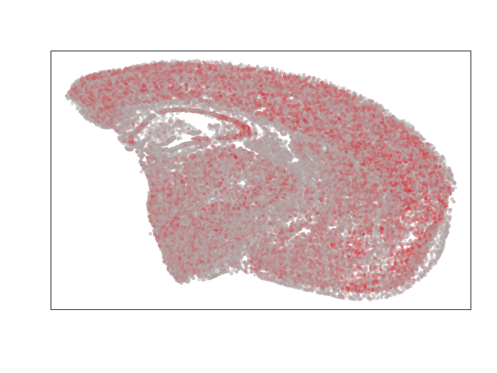
The Visium data, FFPE-preserved adult mouse brain section, can be found at 10X Genomics: https://www.10xgenomics.com/datasets/adult-mouse-brain-ffpe-1-standard-1-3-0. We will download the raw counts for the Visium data first.
# The Visium can be found on 10X Genomics:https://www.10xgenomics.com/datasets/adult-mouse-brain-ffpe-1-standard-1-3-0
# Visium counts ###############################################################
url <- "https://cf.10xgenomics.com/samples/spatial-exp/1.3.0/Visium_FFPE_Mouse_Brain/Visium_FFPE_Mouse_Brain_filtered_feature_bc_matrix.tar.gz"
temp_tar <- tempfile(fileext = ".tar.gz")
download.file(url, destfile = temp_tar, mode = "wb")
temp_dir <- tempdir()
untar(temp_tar, exdir = temp_dir)
matrix_path <- file.path(temp_dir, "filtered_feature_bc_matrix", "matrix.mtx.gz")
barcodes_path <- file.path(temp_dir, "filtered_feature_bc_matrix", "barcodes.tsv.gz")
features_path <- file.path(temp_dir, "filtered_feature_bc_matrix", "features.tsv.gz")
Visium.gexp.raw <- Matrix::readMM(matrix_path)
Visium.barcodes <- read.csv(barcodes_path, header=FALSE)
Visium.genenames <- read.csv(features_path, sep='\t', header=FALSE)
dim(Visium.gexp.raw)
#> [1] 19465 2264
length(Visium.barcodes[,1])
#> [1] 2264
length(Visium.genenames[,2])
#> [1] 19465
rownames(Visium.gexp.raw) <- Visium.genenames[,2]
colnames(Visium.gexp.raw) <- Visium.barcodes[,1]
Visium.gexp.raw[1:5, 1:5]
#> 5 x 5 sparse Matrix of class "dgTMatrix"
#> AAACAGAGCGACTCCT-1 AAACCCGAACGAAATC-1 AAACCGGGTAGGTACC-1
#> Xkr4 1 . 1
#> Rp1 . . .
#> Sox17 . . .
#> Lypla1 1 . .
#> Tcea1 1 . 1
#> AAACCGTTCGTCCAGG-1 AAACGAAGAACATACC-1
#> Xkr4 . .
#> Rp1 . .
#> Sox17 . .
#> Lypla1 . .
#> Tcea1 1 1Next, we will download the position information for the Visium data, which includes the spatial coordinates of each spot and the scale factor to convert those coordinates to microns.
# Visium positions #############################################################
url <- "https://cf.10xgenomics.com/samples/spatial-exp/1.3.0/Visium_FFPE_Mouse_Brain/Visium_FFPE_Mouse_Brain_spatial.tar.gz"
temp_tar <- tempfile(fileext = ".tar.gz")
download.file(url, destfile = temp_tar, mode = "wb")
temp_dir <- tempdir()
untar(temp_tar, exdir = temp_dir)
pos_path <- file.path(temp_dir, "spatial", "tissue_positions_list.csv")
scale_path <- file.path(temp_dir, "spatial", "scalefactors_json.json")
Visium.pos.info <- read.csv(pos_path, header = FALSE, row.names = 1)
head(Visium.pos.info)
#> V2 V3 V4 V5 V6
#> ACGCCTGACACGCGCT-1 0 0 0 5247 21461
#> TACCGATCCAACACTT-1 0 1 1 5391 21208
#> ATTAAAGCGGACGAGC-1 0 0 2 5537 21460
#> GATAAGGGACGATTAG-1 0 1 3 5682 21207
#> GTGCAAATCACCAATA-1 0 0 4 5827 21460
#> TGTTGGCTGGCGGAAG-1 0 1 5 5972 21207
Visium.pos <- Visium.pos.info[, 4:5]
Visium.pos.good <- Visium.pos[colnames(Visium.gexp.raw),]
convert <- fromJSON(file = scale_path)
range(Visium.pos.good*convert$tissue_hires_scalef)
#> [1] 459.554 1724.894
Visium.pos.good <- Visium.pos.good*convert$tissue_hires_scalef
colnames(Visium.pos.good) <- c("y", "x")
#rotate 90 clockwise to match the conventional orientation
Visium.pos.good <- cbind(Visium.pos.good[,"x"], -Visium.pos.good[,"y"])
rownames(Visium.pos.good) <- colnames(Visium.gexp.raw)
#switch names of x and y to match the convention of scatterbar
colnames(Visium.pos.good) <- c("x", "y")
## plot
Visium.gexp.raw <- as.matrix(Visium.gexp.raw)
par(mfrow=c(1,1))
MERINGUE::plotEmbedding(Visium.pos.good, col=colSums(Visium.gexp.raw))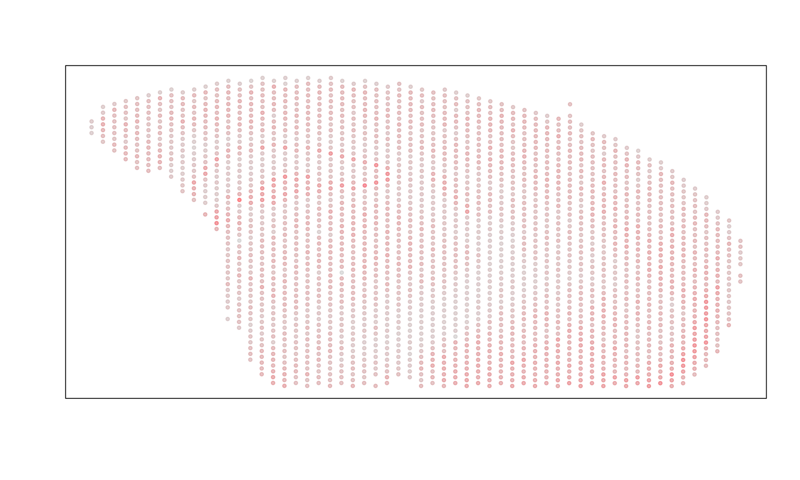
We will only be able to compare genes that are shared across the two technologies, so we will subset to the genes that are shared across the two datasets.
Create SpatialExperiment
Now that both the counts and the position matrices have been loaded,
the input to STcompare is a SpatialExperiment.
They are objects that store spatial transcriptomics data, in this case,
combining gene expression matrices with the spatial coordinates of each
spatial location.
To control for detection efficiency differences between the two technologies, we perform the same counts-per-million normalization on the Visium spot gene expression measurements and the MERFISH cell gene expression measurements.
MERFISH_SE <- SpatialExperiment::SpatialExperiment(
assays = list(counts = MERFISH.gexp[genes.have, rownames(MERFISH.pos.good)],
libnorm = MERINGUE::normalizeCounts(MERFISH.gexp[genes.have, rownames(MERFISH.pos.good)], log = FALSE)),
spatialCoords = as.matrix(MERFISH.pos.good),
)
#> Converting to sparse matrix ...
#> Normalizing matrix with 40697 cells and 466 genes.
#> normFactor not provided. Normalizing by library size.
#> Using depthScale 1e+06
Visium_SE <- SpatialExperiment::SpatialExperiment(
assays = list(counts = Visium.gexp.raw[genes.have,],
libnorm = MERINGUE::normalizeCounts(Visium.gexp.raw[genes.have,], log=FALSE)),
spatialCoords = as.matrix(Visium.pos.good)
)
#> Converting to sparse matrix ...
#> Normalizing matrix with 2264 cells and 466 genes.
#> normFactor not provided. Normalizing by library size.
#> Using depthScale 1e+06Rasterize Gene Expression
STcompare takes a list of SpatialExperiment
objects and requires them to have matched spatial locations. Use
SEraster to rasterize multiple samples onto the same
coordinate system, allowing STcompare to pairwise compare
across any number of samples. SEraster
formatting tutorial
# Create a list of SpatialExperiment objects to rasterize
spe_list <- list(MERFISH = MERFISH_SE, Visium = Visium_SE)
# Choose a rasterization resolution that is appropriate for the data. The resolution should be large enough to capture the spatial patterns of interest but not too large that it smooths out important details.
resolution = 20
# Rasterize the gene expression data for each sample onto the same coordinate system. This will create a new list of SpatialExperiment objects that contains the rasterized gene expression values.
rast <- SEraster::rasterizeGeneExpression(spe_list,
resolution = resolution,
assay_name = 'libnorm',
fun = "mean",
square = FALSE,
BPPARAM = BiocParallel::MulticoreParam())
# add an assay that computes log transformation after mean-rasterization
SummarizedExperiment::assay(rast[["MERFISH"]], "lognorm") <- log10(SummarizedExperiment::assay(rast[["MERFISH"]]) + 1)
SummarizedExperiment::assay(rast[["Visium"]], "lognorm") <- log10(SummarizedExperiment::assay(rast[["Visium"]]) + 1)Visualize the spatial patterns of gene expression for example genes in the rasterized data. We expect to see similar spatial patterns of gene expression across the two technologies for the same gene.
gene <- "Baiap2"
plt1 <- SEraster::plotRaster(rast[["MERFISH"]][gene,], assay_name = "lognorm", name = paste0(gene, " log normalized expression")) + ggplot2::theme_void()
#> Coordinate system already present.
#> ℹ Adding new coordinate system, which will replace the existing one.
plt2 <- SEraster::plotRaster(rast[["Visium"]][gene,], assay_name = "lognorm", name = paste0(gene, " log normalized expression")) + ggplot2::theme_void()
#> Coordinate system already present.
#> ℹ Adding new coordinate system, which will replace the existing one.
plt1 + plt2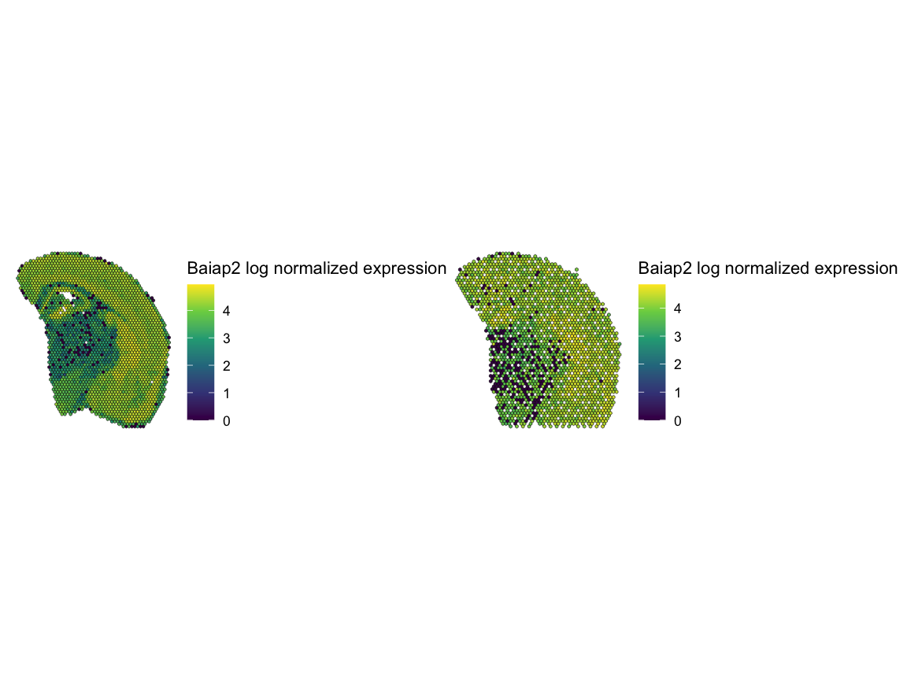
Filter lowly expression genes
STcompare’s SpatialCorrelation does not work when there
is zero expression of a gene expression as it cannot create permutations
for the empirical p-value from zero expression.
# gene is expressed in greater than 1% of all spots
# this has to be true in both datasets to be considered a "good gene"
good.genes <- names(which(
(Matrix::rowSums(SummarizedExperiment::assay(rast[["MERFISH"]], "lognorm") > 0) / dim(rast[["MERFISH"]])[2]*100 > 1) &
(Matrix::rowSums(SummarizedExperiment::assay(rast[["Visium"]], "lognorm") > 0) / dim(rast[["Visium"]])[2]*100 > 1)))
length(good.genes)
#> [1] 325
# Reduced the number of genes from 466 --> 325 genes
rast[["MERFISH"]] <- rast[["MERFISH"]][good.genes,]
rast[["Visium"]] <- rast[["Visium"]][good.genes,]Identify SVGs
Of the “good genes” that have expression in at least 1% of spots, we now want to identify which of those genes are then spatially variable (SVG). We use Moran’s I to identify SVGs.
moransI <- function(SE_temp, filterDist, assayName=1){
# use MERINGUE to get the neighbor-relationships
w <- MERINGUE::getSpatialNeighbors(SpatialExperiment::spatialCoords(SE_temp), filterDist = filterDist)
par(mfrow=c(1,1))
MERINGUE::plotNetwork(SpatialExperiment::spatialCoords(SE_temp), w)
# Identify significantly spatially auto-correlated genes
I <- MERINGUE::getSpatialPatterns(SummarizedExperiment::assays(SE_temp)[[assayName]], w)
# filter for significant spatially auto-correlated genes with multiple testing correction and a minimum percentage of cells driving the pattern
results.filter <- MERINGUE::filterSpatialPatterns(mat = SummarizedExperiment::assays(SE_temp)[[assayName]],
I = I,
w = w,
adjustPv = TRUE,
alpha = 0.05,
minPercentCells = 0.01,
verbose = TRUE, details = TRUE)
return(results.filter)
}Calculate Moran’s I on the rasterized MERFISH data to reduce computational time.
moransI_MERFISH <- moransI(rast[["MERFISH"]], filterDist = resolution + 1, assayName = "lognorm")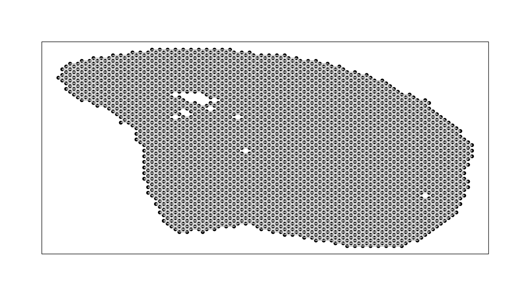
#> Number of significantly autocorrelated genes: 323
#> ...driven by > 26.27 cells: 323
head(moransI_MERFISH)
#> observed expected sd p.value p.adj minPercentCells
#> Oprk1 0.5761739 -0.0003808073 0.01151004 0 0 0.44918158
#> Npbwr1 0.2733702 -0.0003808073 0.01150062 0 0 0.08602969
#> Adgrb3 0.2536248 -0.0003808073 0.01142613 0 0 0.04644081
#> Gpr45 0.4314028 -0.0003808073 0.01150435 0 0 0.14503236
#> Fzd7 0.2153505 -0.0003808073 0.01150968 0 0 0.20098972
#> Nrp2 0.3413054 -0.0003808073 0.01150477 0 0 0.21811953Calculate Moran’s I on the non-rasterized Visium data.
moransI_Visium <- moransI(Visium_SE, filterDist = 25, assayName = "libnorm")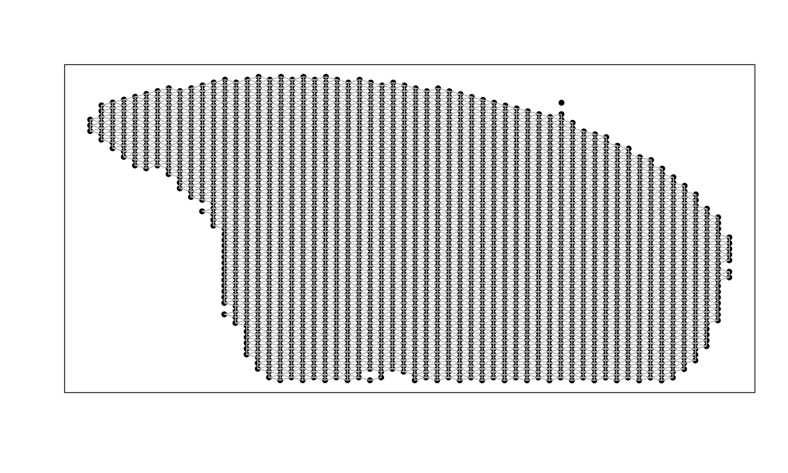
#> Number of significantly autocorrelated genes: 262
#> ...driven by > 22.64 cells: 230
head(moransI_Visium)
#> observed expected sd p.value p.adj
#> Oprk1 0.12114212 -0.0004418913 0.01234577 0.000000e+00 0.000000e+00
#> Npbwr1 0.04602531 -0.0004418913 0.01227825 7.700481e-05 1.540096e-04
#> Adgrb3 0.09042286 -0.0004418913 0.01238931 1.115774e-13 3.053698e-13
#> Fzd7 0.04363618 -0.0004418913 0.01225968 1.619669e-04 3.148515e-04
#> Nrp2 0.39641739 -0.0004418913 0.01237100 0.000000e+00 0.000000e+00
#> Pth2r 0.04638308 -0.0004418913 0.01229794 7.017669e-05 1.410314e-04
#> minPercentCells
#> Oprk1 0.04946996
#> Npbwr1 0.01457597
#> Adgrb3 0.08524735
#> Fzd7 0.02252650
#> Nrp2 0.09098940
#> Pth2r 0.02782686Next, we make one list of genes that are spatially variable in both datasets and another list of genes that are not spatially variable in both datasets.
# Running the function `moransI` above already filtered the dataframe to only the genes that are statistically significantly autocorrelated so we can just take the rownames of the resulting dataframes to get the list of spatially variable genes in each dataset.
svg_MERFISH <- moransI_MERFISH %>% rownames()
svg_Visium <- moransI_Visium %>% rownames()
# genes that are SVGs in both conditions
svg_int <- intersect(svg_MERFISH, svg_Visium)
# genes that are not SVGs in both conditions
non_svg <- good.genes[!(good.genes %in% svg_int)]
# Out of 325 genes:
# there are 324 genes that are SVGs in the MERFISH dataset
length(svg_MERFISH)
#> [1] 323
# there are 230 genes that are SVGs in the Visium dataset
length(svg_Visium)
#> [1] 230
# there are 230 genes that are SVGs in both datasets
length(svg_int)
#> [1] 230
# there are 95 genes that are not SVGs in both datasets
length(non_svg)
#> [1] 95Spatial correlation of gene expression across technologies
Use STcompare to calculate Pearson’s correlation coefficient for genes in both technologies to investigate if there is spatial correspondence of gene expression.
# running spatialCorrelationGeneExpIterPermutations
start_time <- Sys.time()
brainCorrelation <- STcompare::spatialCorrelationGeneExpIterPermutations(
rast,
assayName = "lognorm",
returnPermutations = FALSE,
nThreads = 22,
seed = 0
)
end_time <- Sys.time()
print(end_time - start_time) # Time difference of 1.777397 hoursWe expect spatially variable genes to be significantly positively correlated and expect non-spatially variable genes to not be significantly correlated.
# Full script to generate the precomputed vignette results available at:
# system.file("scripts", "brain-MERFISH-10x-visium.R", package = "STcompare")
# the brainCorrelation variable is saved at:
load(system.file("extdata", "brain-MERFISH-10x-visium", "brainCorrelation.RData", package = "STcompare"))
# saving the significantly positively correlated svg genes
svgSigPos <- brainCorrelation %>%
dplyr::filter(rownames(brainCorrelation) %in% svg_int) %>%
dplyr::filter(pValuePermuteX < 0.05 & pValuePermuteY < 0.05) %>%
dplyr::filter(correlationCoef > 0) %>%
dplyr::arrange(desc(correlationCoef)) %>%
rownames()
# % genes that are significantly positively correlated
length(svgSigPos)/length(svg_int)
#> [1] 0.5130435
# saving the significantly negatively correlated svg genes
svgSigNeg <- brainCorrelation %>%
dplyr::filter(rownames(brainCorrelation) %in% svg_int) %>%
dplyr::filter(pValuePermuteX < 0.05 & pValuePermuteY < 0.05) %>%
dplyr::filter(correlationCoef < 0) %>%
rownames()
# % genes that are significantly negatively correlated
length(svgSigNeg)/length(svg_int)
#> [1] 0
# saving the not significantly correlated non-svg genes
nonsvgNotSig <- brainCorrelation %>%
dplyr::mutate(rownamesCol = rownames(brainCorrelation)) %>%
dplyr::filter(rownamesCol %in% non_svg) %>%
dplyr::filter(pValuePermuteX >= 0.05 | pValuePermuteY >= 0.05) %>%
dplyr::arrange(correlationCoef) %>%
rownames()
# % non svgs that are not significantly correlated
length(nonsvgNotSig)/length(non_svg)
#> [1] 0.894736856% (126/226) of spatially variable genes identified as significantly positively correlated. No spatially variable genes identified as significantly negatively correlated. 90% (89/99) of non-spatially variable genes identified as not significantly correlated.
We can visualize the spatial patterns of gene expression for example genes that are significantly positively correlated and not significantly correlated across the two technologies. We expect to see similar spatial patterns of gene expression across the two technologies for the same gene for significantly positively correlated genes and different spatial patterns of gene expression across the two technologies for not significantly correlated genes. We can also visualize the correlation plot for each gene to show the relationship between the two samples for each gene.
# Visualization of example genes
# plot gene expression spatial patterns of example genes
geneSig <- svgSigPos[1]
geneNotSig <- nonsvgNotSig[1]
#get the shared pixels between the two samples to show only the pixels that are used for the one-to-one comparisons
sharedPixels <- intersect(rownames(SpatialExperiment::spatialCoords(rast$MERFISH)),
rownames(SpatialExperiment::spatialCoords(rast$Visium)))
#use SEraster::plotRaster to plot the spatial pattern of gene expression for each gene in each sample for only the shared pixels
geneSigPltMERFISH <- SEraster::plotRaster(rast$MERFISH[geneSig, sharedPixels], assay_name = "lognorm", name = "log-normalized expression")
#> Coordinate system already present.
#> ℹ Adding new coordinate system, which will replace the existing one.
geneSigPltVisium <- SEraster::plotRaster(rast$Visium[geneSig, sharedPixels], assay_name = "lognorm", name = "log-normalized expression")
#> Coordinate system already present.
#> ℹ Adding new coordinate system, which will replace the existing one.
geneNotSigPltMERFISH <- SEraster::plotRaster(rast$MERFISH[geneNotSig, sharedPixels], assay_name = "lognorm", name = "log-normalized expression")
#> Coordinate system already present.
#> ℹ Adding new coordinate system, which will replace the existing one.
geneNotSigPltVisium <- SEraster::plotRaster(rast$Visium[geneNotSig, sharedPixels], assay_name = "lognorm", name = "log-normalized expression")
#> Coordinate system already present.
#> ℹ Adding new coordinate system, which will replace the existing one.
# use the plotCorrelationGeneExp function to generate the correlation plots
gene_corr_Sig <- plotCorrelationGeneExp(
speList = rast,
assayName = "lognorm",
spatialCorrelation = brainCorrelation,
geneName = geneSig
)
geneSigPltMERFISH + geneSigPltVisium + gene_corr_Sig
#> Ignoring unknown labels:
#> • fill : "Data"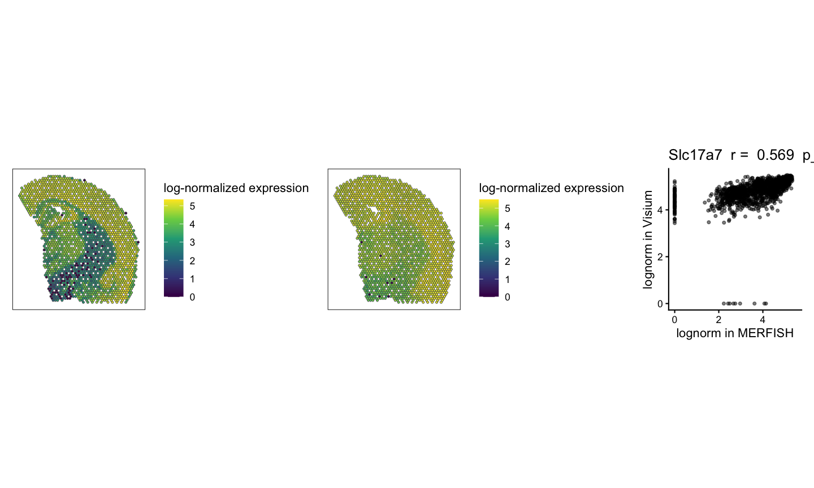
gene_corr_NotSig <- plotCorrelationGeneExp(
speList = rast,
assayName = "lognorm",
spatialCorrelation = brainCorrelation,
geneName = geneNotSig
)
# make multi-panel visualization with the spatial patterns of gene expression in MERFISH and Visium plus the correlation plot for significantly positively correlated gene on the top row and not significantly correlated gene on the bottom row
(geneSigPltMERFISH | geneSigPltVisium | gene_corr_Sig) / (geneNotSigPltMERFISH | geneNotSigPltVisium | gene_corr_NotSig)
#> Ignoring unknown labels:
#> • fill : "Data"
#> Ignoring unknown labels:
#> • fill : "Data"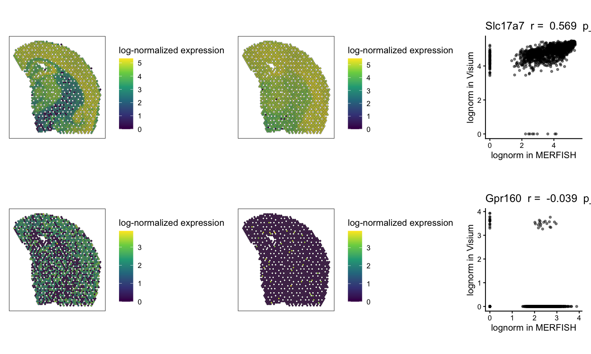
Fold Change Similarity
We calculate the fold change similarity metric for each gene across the two technologies.
# Finding the spatial similarity
# If t1 and t2 are null, then the default threshold is the 0.05 quantile of gene expression.
start_time <- Sys.time()
ss <- spatialSimilarity(rast, assayName = "lognorm", foldChange = 1, t1 = NULL, t2 = NULL)
end_time <- Sys.time()
print(end_time-start_time)
#> Time difference of 3.31933 secsWe can visualize the spatial pattern of the fold change similarity classifications for the same example genes that are significantly positively correlated and not significantly correlated across the two technologies.
# visualization of fold change similarity classifications for significantly positively correlated gene
lr_geneSig <- linearRegression(ss, gene=geneSig, assayName = "lognorm") + ggplot2::theme_classic() + ggplot2::coord_fixed()
pc_geneSig <- pixelClass(ss, gene=geneSig)
#> Coordinate system already present.
#> ℹ Adding new coordinate system, which will replace the existing one.
(lr_geneSig | pc_geneSig)
#> Warning: Removed 109 rows containing missing values or values outside the scale range
#> (`geom_point()`).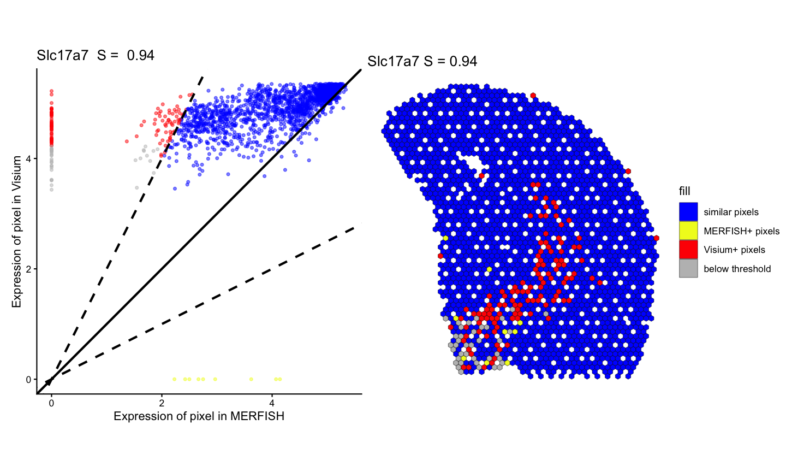
# visualization of fold change similarity classifications for not significantly correlated gene
lr_geneNotSig <- linearRegression(ss, gene=geneNotSig, assayName = "lognorm") + ggplot2::theme_classic() + ggplot2::coord_fixed()
pc_geneNotSig <- pixelClass(ss, gene=geneNotSig)
#> Coordinate system already present.
#> ℹ Adding new coordinate system, which will replace the existing one.
(lr_geneNotSig | pc_geneNotSig)
#> Warning: Removed 148 rows containing missing values or values outside the scale range
#> (`geom_point()`).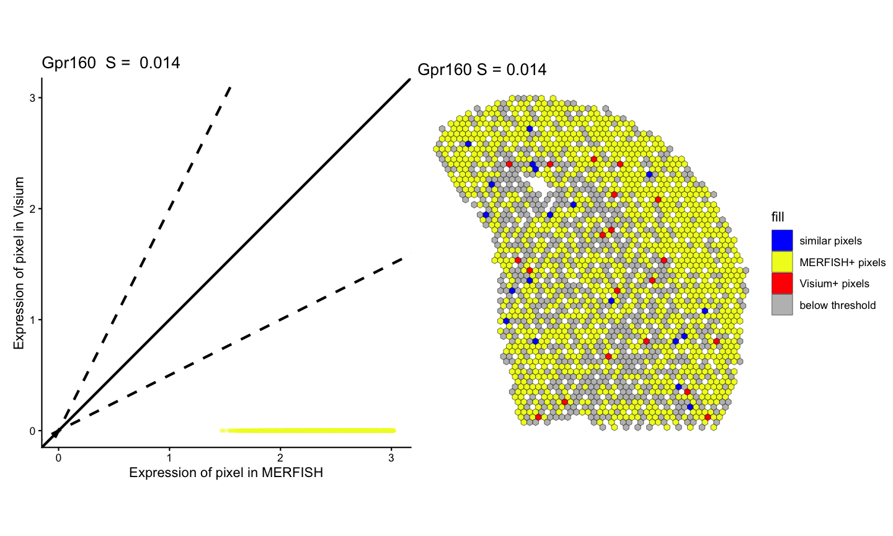
# four panel visualization
(lr_geneSig | pc_geneSig)/(lr_geneNotSig | pc_geneNotSig)
#> Warning: Removed 109 rows containing missing values or values outside the scale range
#> (`geom_point()`).
#> Warning: Removed 148 rows containing missing values or values outside the scale range
#> (`geom_point()`).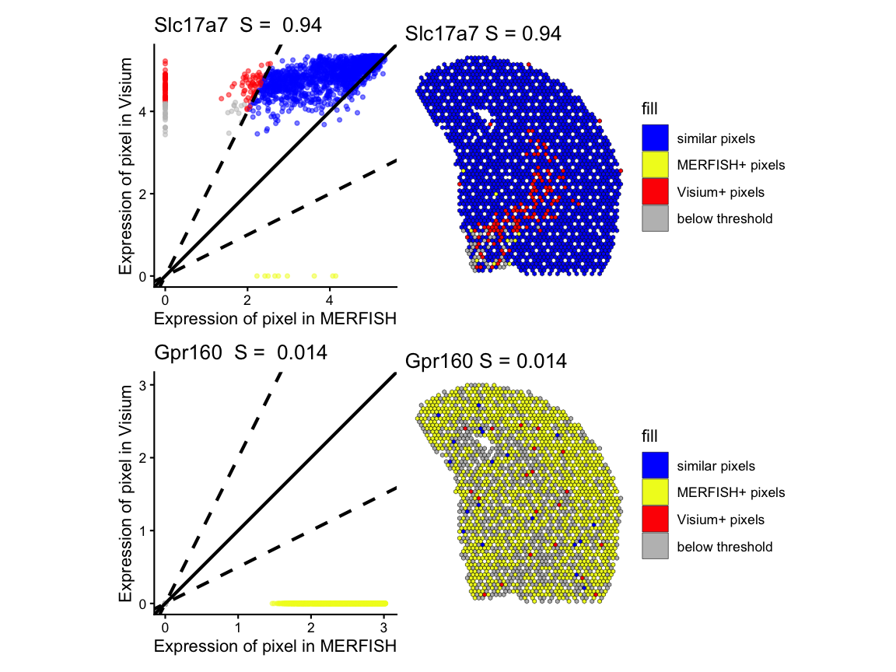
Finally, we compare the correlation and similarity metrics for each gene and showed that the compare the correlation and similarity metrics offer orthogonal insights.
# 2k - Comparing Correlation Metric to Similiarty metric
# create a df of correlation and similarity values for each gene
sim_corr <- data.frame(gene = ss$similarityTable$gene,
correlation = brainCorrelation[, "correlationCoef" ],
similar = ss$similarityTable$percentSimilarity)
head(sim_corr)
#> gene correlation similar
#> 1 Oprk1 0.18428938 0.13915094
#> 2 Npbwr1 0.04415098 0.03980100
#> 3 Adgrb3 0.08165172 0.90321080
#> 4 Gpr45 0.04292795 0.15603585
#> 5 Fzd7 -0.02032095 0.07035519
#> 6 Nrp2 0.22128464 0.37557252
sim_corr_plt <- sim_corr %>%
dplyr::mutate(Sig = case_when(gene %in% svgSigPos ~ "SigPos",
gene %in% svgSigNeg ~ "SigNeg",
.default = "NotSig")) %>%
dplyr::filter(Sig %in% c("SigPos")) %>%
ggplot2::ggplot() +
ggplot2::geom_point(ggplot2::aes(x = correlation, y = similar), alpha = 0.25, size = 1) +
ggplot2::xlim(NA,1) +
ggplot2::coord_fixed() +
ggplot2::theme_classic() +
ggplot2::labs(x = "Correlation" , y = "Similarity",
title = "Similarity for significantly positively SVGs")
sim_corr_plt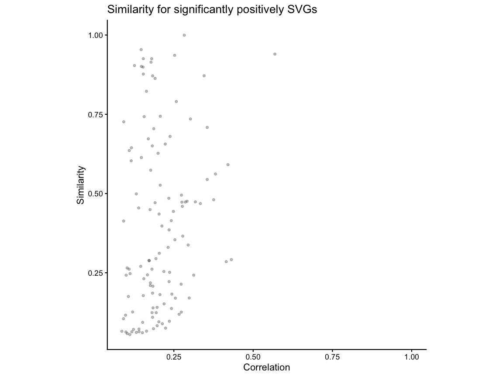
We note that this gene expression correspondence is lower than what was previously observed for biological replicates both assayed by MERFISH (93% of spatially variable genes identified as significantly positively correlated in https://doi.org/10.1101/2025.11.21.689847) most likely due to variation in detection efficiency across technologies in addition to variation in tissue preservation rather than poor spatial alignment. While MERFISH detects targeted genes at high sensitivity, Visium enables untargeted transcriptome-wide profiling though sensitivity for individual genes may be lower. Likewise, while the MERFISH dataset was generated with fresh, frozen tissue, the Visium dataset was generated with FFPE-preserved tissue. Still, we anticipate that while sensitivity to specific genes may vary across technologies and with different tissue preservation techniques, the underlying cell-types should be consistent.
Load cell type annotations for MERFISH and Visium
In “STalign: Alignment of spatial transcriptomics data using diffeomorphic metric mapping” (Clifton et al. 2023), cell type annotations were generated for the same MERFISH and Visium datasets used in this tutorial. To identify cell types, transcriptional clustering analysis was performed on the single cell resolution MERFISH data and deconvolution analysis on the multi-cellular pixel-resolution Visium data. The cell-types were matched across technologies based on transcriptional similarity between the cell clusters and the deconvolved cell-types.
#load cmat: matrix of spearman correlation coefficients for transcriptional similarity between MERFISH cell-types (rows) and deconvolved Visium cell-types (columns)
zenodo_url <- "https://zenodo.org/records/19582556/files/STalign_cell_type_transcriptional_correlations.csv.gz?download=1"
temp <- tempfile(fileext = ".csv.gz")
download.file(zenodo_url, destfile = temp, mode = "wb")
# cmat <- read.csv(gzfile(temp), row.names = 1)
cmat <- read.csv(gzfile(temp), row.names = 1, check.names = FALSE)
colnames(cmat) <- rownames(cmat)
cmat[1:5, 1:5]
#> CT-1 CT-2 CT-3 CT-4 CT-5
#> CT-1 0.6603263 0.2710134 0.3427982 0.16802212 -0.12065014
#> CT-2 0.4944674 0.4200532 0.4407482 -0.02812316 -0.14726679
#> CT-3 0.4930669 0.2429560 0.4559695 0.08403934 -0.03597384
#> CT-4 0.4662453 0.1261933 0.1908807 0.19388234 0.06403691
#> CT-5 -0.4640679 -0.1468561 -0.1745724 -0.20694111 0.49022359
#load ctMERFISH: named vector of cell type annotations for MERFISH cells, names are cell ids
zenodo_url <- "https://zenodo.org/records/19582556/files/STalign_S2R3_cell_type_annotations.csv.gz?download=1"
temp <- tempfile(fileext = ".csv.gz")
download.file(zenodo_url, destfile = temp, mode = "wb")
ctMERFISH <- read.csv(gzfile(temp), row.names = 1, stringsAsFactors = FALSE)
tempNames <- rownames(ctMERFISH)
levelNames <- rownames(cmat)
ctMERFISH <- factor(ctMERFISH$x, levels = levelNames)
names(ctMERFISH) <- tempNames
head(ctMERFISH)
#> 1.63189170307179e+38 1.80845412722656e+38 2.93517844416e+38
#> CT-11 CT-14 CT-1
#> 1.4804518995479e+38 1.5214614638271e+38 2.21475186968301e+38
#> CT-5 CT-12 CT-14
#> 16 Levels: CT-1 CT-2 CT-3 CT-4 CT-5 CT-6 CT-7 CT-8 CT-9 CT-10 CT-11 ... CT-16
#load ctVisium: matrix of deconvolved cell type proportions for Visium spots, rows are the spot barcodes and columns are cell type names
zenodo_url <- "https://zenodo.org/records/19582556/files/STalign_Visium_cell_type_annotations.csv.gz?download=1"
temp <- tempfile(fileext = ".csv.gz")
download.file(zenodo_url, destfile = temp, mode = "wb")
ctVisium <- read.csv(gzfile(temp), row.names = 1, stringsAsFactors = FALSE)
colnames(ctVisium) <- rownames(cmat)
ctVisium[1:5, 1:5]
#> CT-1 CT-2 CT-3 CT-4 CT-5
#> AAACAGAGCGACTCCT-1 0.0000000 0 0 0.0000000 0.2784436
#> AAACCCGAACGAAATC-1 0.0535788 0 0 0.2691073 0.0000000
#> AAACCGGGTAGGTACC-1 0.0000000 0 0 0.0000000 0.0000000
#> AAACCGTTCGTCCAGG-1 0.1393211 0 0 0.0000000 0.0000000
#> AAACGAAGAACATACC-1 0.0000000 0 0 0.0000000 0.1962521Visualize the spatial patterns of cell types across the two technologies.
We will limit to only the cell types that are mutually the most
transcriptionally similar across the two technologies for visualization
to highlight the shared cell types across the two technologies. We will
use MERINGUE::plotEmbedding to visualize the cell type
labels for MERFISH and scatterbar::scatterbar to visualize
the deconvolved cell type proportions for Visium.
cmat <- as.matrix(cmat)
# make list of the most transcriptionally similar cell types across the two technologies
best.cts <- unlist(lapply(1:nrow(cmat), function(i) {
if (Matrix::diag(cmat)[i] == max(cmat[i,]) & Matrix::diag(cmat)[i] == max(cmat[,i])) {
return(rownames(cmat)[i])
}
}))
# assign colors to each cell type for visualization, prioritizing showing the best transcriptionally aligned cell types in color and the rest of the cell types in grey
set.seed(111111)
ccols <- rep('#eeeeee', nrow(cmat))
names(ccols) <- rownames(cmat)
ccols[best.cts] <- sample(rainbow(length(best.cts)), length(best.cts))
ccols
#> CT-1 CT-2 CT-3 CT-4 CT-5 CT-6 CT-7 CT-8
#> "#FFAA00" "#eeeeee" "#eeeeee" "#eeeeee" "#eeeeee" "#AA00FF" "#eeeeee" "#00FFAA"
#> CT-9 CT-10 CT-11 CT-12 CT-13 CT-14 CT-15 CT-16
#> "#00AAFF" "#FF00AA" "#AAFF00" "#00FF00" "#0000FF" "#eeeeee" "#eeeeee" "#FF0000"
#names(ccols) <- make.names(names(ccols))
#plot the cell type labels for MERFISH
par(mfrow=c(1,1), mar=rep(1,4))
MERINGUE::plotEmbedding(SpatialExperiment::spatialCoords(MERFISH_SE), groups=ctMERFISH, group.level.colors = ccols, cex=0.5) ## on tissue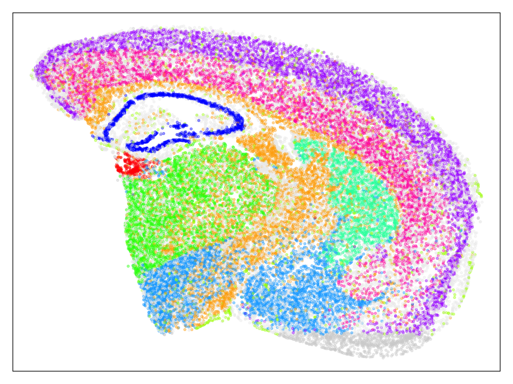
#plot the deconvolved cell type proportions for Visium
dfproportions <- data.frame(ctVisium)
colnames(dfproportions) <- names(ccols)
dfcoords <- data.frame(SpatialExperiment::spatialCoords(Visium_SE))
p9 <- scatterbar::scatterbar(data = dfproportions,
xy = dfcoords,
size_x = 15, size_y = 15,
colors = ccols,
padding_x = 0.01, padding_y = 0.01) + coord_fixed() +
ggplot2::theme(legend.position="none")
#> Calculated size_x: 14.99
#> Calculated size_y: 14.99
#> Applied padding_x: 0.01
#> Applied padding_y: 0.01
p9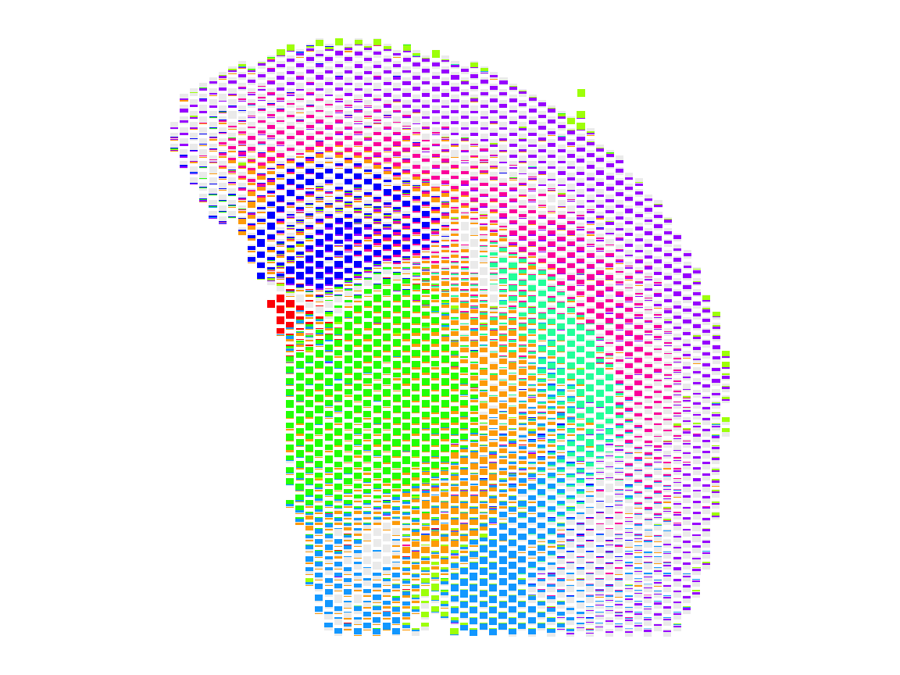
Create new SpatialExperiment objects with cell type labels
To compare the spatial patterns of cell types across the two
technologies, we can make new SpatialExperiment objects with the cell
type labels as the assay and then run
STcompare::spatialCorrelationGeneExp to calculate the
spatial correlation of cell types across the two technologies.
For single cell resolution data like MERFISH, we can input the cell type labels into the SpatialExperiment object as colData, since each column is a cell that gets a single cell type label. However, for spot resolution data like Visium, each column represents a spot and we have deconvolved cell type proportions for each spot rather than discrete cluster labels so we cannot input the cell type labels into the SpatialExperiment object as colData.
Instead, we can make new SpatialExperiment objects with the cell type labels as the assay. In this case, we will have each row as a cell type instead of a gene.
It is important that we input the cell type labels as the assay
rather than colData for both datasets to make sure that the same
function can be used to rasterize the cell type labels. If we input the
cell type labels as colData for MERFISH and as an assay for Visium, then
we would have to use SEraster::rasterizeCellType for
MERFISH and SEraster::rasterizeGeneExpression for Visium to
rasterize the cell type labels for each dataset and it would be harder
to ensure that the same spatial locations are being compared across the
two datasets because the rasterization grid would not be the same for
both datasets and the pixel indices would not be shared.
# make new spatial experiment for Visium with cluster labels as the assay
Visium_SE_ct <- SpatialExperiment::SpatialExperiment(
assays = list(celltypes = t(ctVisium)),
spatialCoords = as.matrix(SpatialExperiment::spatialCoords(Visium_SE))
)
# make new spatial experiment for MERFISH with one-hot encoded cluster labels as the assay
one_hot <- model.matrix(~ x - 1, data = data.frame( x = ctMERFISH[intersect(colnames(MERFISH_SE), names(ctMERFISH))]))
colnames(one_hot) <- gsub("x", "", colnames(one_hot))
MERFISH_SE_ct <- SpatialExperiment::SpatialExperiment(
assays = list(celltypes = t(one_hot)),
spatialCoords = as.matrix(SpatialExperiment::spatialCoords(MERFISH_SE)[intersect(colnames(MERFISH_SE), names(ctMERFISH)), ])
)Rasterize the cell type labels
Since the cell type labels are in the assay for both the MERFISH and
Visium SpatialExperiment objects, we can rasterize the cell type labels
for both the MERFISH and Visium SpatialExperiment objects using
SEraster::rasterizeGeneExpression instead of
SEraster::rasterizeCellType. The resulting values in the
rasterized pixels will be cell type proportions.
# rasterize the cell type labels for Visium using rasterizeGeneExpression since we have the deconvolved proportions for Visium rather than discrete cluster labels
input <- list(Visium = Visium_SE_ct, MERFISH = MERFISH_SE_ct)
rast_ct <- SEraster::rasterizeGeneExpression(input,
assay_name = "celltypes",
resolution = resolution,
fun = "mean",
square = FALSE,
BPPARAM = BiocParallel::MulticoreParam())Visualize the spatial patterns of cell types
We can use scatterbar::scatterbar to visualize the
spatial patterns of cell type proportions across the two
technologies.
#get the shared pixels between the two samples to show only the pixels that are used for the one-to-one comparisons
sharedPixels <- intersect(rownames(SpatialExperiment::spatialCoords(rast_ct$Visium)),
rownames(SpatialExperiment::spatialCoords(rast_ct$MERFISH)))
#For Visium, use scatterbar to visualize the proportion of each region in each sample
dfproportions_Visium <- data.frame(t(as.matrix(SummarizedExperiment::assay(rast_ct$Visium)[, sharedPixels])))
colnames(dfproportions_Visium) <- names(ccols)
dfcoords_Visium <- data.frame(SpatialExperiment::spatialCoords(rast_ct$Visium)[sharedPixels, ])
p10 <- scatterbar::scatterbar(data = dfproportions_Visium,
xy = dfcoords_Visium,
size_x = 15, size_y = 15,
colors = ccols,
padding_x = 0.01, padding_y = 0.01) + coord_fixed() +
ggplot2::theme(legend.position="none")
#> Calculated size_x: 14.99
#> Calculated size_y: 14.99
#> Applied padding_x: 0.01
#> Applied padding_y: 0.01
#For MERFISH, use scatterbar to visualize the proportion of each region in each sample
dfproportions_MERFISH <- data.frame(t(as.matrix(SummarizedExperiment::assay(rast_ct$MERFISH)[, sharedPixels])))
colnames(dfproportions_MERFISH) <- names(ccols)
dfcoords_MERFISH <- data.frame(SpatialExperiment::spatialCoords(rast_ct$MERFISH)[sharedPixels, ])
p11 <- scatterbar::scatterbar(data = dfproportions_MERFISH,
xy = dfcoords_MERFISH,
size_x = 15, size_y = 15,
colors = ccols,
padding_x = 0.01, padding_y = 0.01) + coord_fixed() +
ggplot2::theme(legend.position="none")
#> Calculated size_x: 14.99
#> Calculated size_y: 14.99
#> Applied padding_x: 0.01
#> Applied padding_y: 0.01
p10 + p11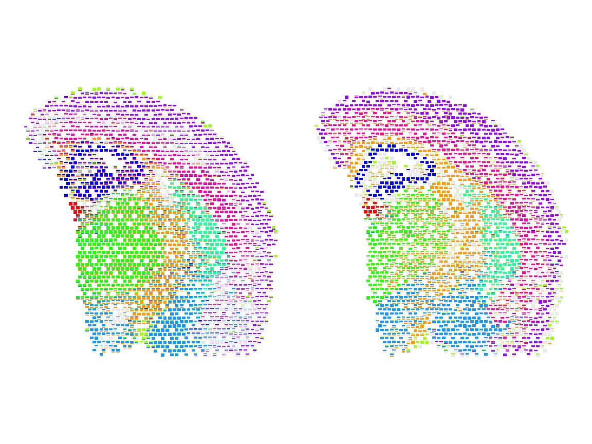
Calculate the spatial correlation of cell types
Now we use STcompare to calculate the spatial correlation of cell types across the two technologies.
# running spatialCorrelationGeneExpIterPermutations
start_time <- Sys.time()
ctCorrelation <- STcompare::spatialCorrelationGeneExpIterPermutations(
rast_ct,
returnPermutations = FALSE,
nThreads = 22
)
end_time <- Sys.time()
print(end_time - start_time) # Time difference of 6.951119 minsWe can summarize the number of significantly positively correlated cell types, significantly negatively correlated cell types, and not significantly correlated cell types across the two technologies. We expect the most transcriptionally correlated cell types to all be significantly positively spatially correlated across the two technologies.
# Full script to generate the precomputed vignette results available at:
# system.file("scripts", "brain-MERFISH-10x-visium.R", package = "STcompare")
# the brainCorrelation variable is saved at:
load(system.file("extdata", "brain-MERFISH-10x-visium", "ctCorrelation.RData", package = "STcompare"))
# saving the significantly positively spatially correlated cell types from best transcriptionally correlated cell types
ctSigPos <- ctCorrelation %>%
dplyr::filter(rownames(ctCorrelation) %in% best.cts) %>%
dplyr::filter(pValuePermuteX < 0.05 & pValuePermuteY < 0.05) %>%
dplyr::filter(correlationCoef > 0) %>%
dplyr::arrange(desc(correlationCoef)) %>%
rownames()
# number of cell types that are significantly positively correlated
length(ctSigPos)
#> [1] 9
# percentage of transcriptionally correlated cell types that are significantly positively spatially correlated
length(ctSigPos)/length(best.cts) * 100
#> [1] 100
# saving the significantly negatively correlated cell types from best transcriptionally correlated cell types
ctSigNeg <- ctCorrelation %>%
dplyr::filter(rownames(ctCorrelation) %in% best.cts) %>%
dplyr::filter(pValuePermuteX < 0.05 & pValuePermuteY < 0.05) %>%
dplyr::filter(correlationCoef < 0) %>%
rownames()
# number of cell types that are significantly negatively correlated
length(ctSigNeg)
#> [1] 0
# saving the not significantly correlated cell types from best transcriptionally correlated cell types
ctNotSig <- ctCorrelation %>%
dplyr::filter((rownames(ctCorrelation) %in% best.cts)) %>%
dplyr::filter(pValuePermuteX >= 0.05 | pValuePermuteY >= 0.05) %>%
dplyr::arrange(correlationCoef) %>%
rownames()
# number of cell types that are not significantly correlated
length(ctNotSig)
#> [1] 0Fold Change Similarity
We can calculate the fold change similarity metric for the cell types across the two technologies. We expect the same cell types to have high percentSimilarity across the two technologies.
# Finding the spatial similarity
# If t1 and t2 are null, then the default threshold is the 0.05 quantile of gene expression.
start_time <- Sys.time()
ss_ct <- STcompare::spatialSimilarity(rast_ct, foldChange = 1, t1 = NULL, t2 = NULL)
end_time <- Sys.time()
print(end_time-start_time)
#> Time difference of 0.171205 secsLastly, we can visualize the results of the spatialSimilarity analysis for the cell types. For the significantly positively correlated cell type, we expect to see most of the pixels to be classified as “similar” and colored in blue. For the not significantly correlated cell type, we expect to see where the cell type is located in
pltlist <-lapply(ctSigPos, function(i) {
#plot the linear regression and pixel class plots for significantly positively correlated cell types
plt1 <- STcompare::linearRegression(ss_ct, gene=i) + ggplot2::theme_classic() + ggplot2::coord_fixed()
plt2 <- STcompare::pixelClass(ss_ct, gene=i)
return(c(plt1, plt2))
})
#> Coordinate system already present.
#> ℹ Adding new coordinate system, which will replace the existing one.
#> Coordinate system already present.
#> ℹ Adding new coordinate system, which will replace the existing one.
#> Coordinate system already present.
#> ℹ Adding new coordinate system, which will replace the existing one.
#> Coordinate system already present.
#> ℹ Adding new coordinate system, which will replace the existing one.
#> Coordinate system already present.
#> ℹ Adding new coordinate system, which will replace the existing one.
#> Coordinate system already present.
#> ℹ Adding new coordinate system, which will replace the existing one.
#> Coordinate system already present.
#> ℹ Adding new coordinate system, which will replace the existing one.
#> Coordinate system already present.
#> ℹ Adding new coordinate system, which will replace the existing one.
#> Coordinate system already present.
#> ℹ Adding new coordinate system, which will replace the existing one.
gridExtra::grid.arrange(gridExtra::arrangeGrob(grobs = pltlist[[1]], ncol = 2),
gridExtra::arrangeGrob(grobs = pltlist[[2]], ncol = 2),
gridExtra::arrangeGrob(grobs = pltlist[[3]], ncol = 2)
)
#> Warning: Removed 132 rows containing missing values or values outside the scale range
#> (`geom_point()`).
#> Warning: Removed 112 rows containing missing values or values outside the scale range
#> (`geom_point()`).
#> Warning: Removed 104 rows containing missing values or values outside the scale range
#> (`geom_point()`).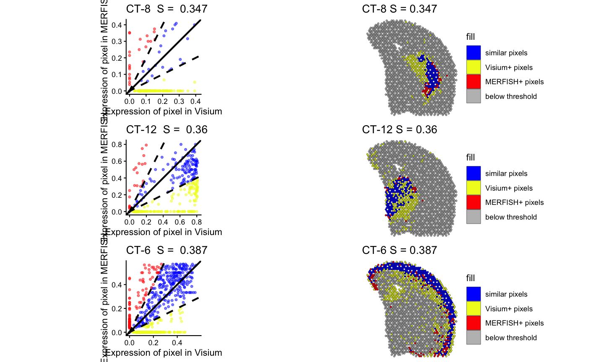
gridExtra::grid.arrange(gridExtra::arrangeGrob(grobs = pltlist[[4]], ncol = 2),
gridExtra::arrangeGrob(grobs = pltlist[[5]], ncol = 2),
gridExtra::arrangeGrob(grobs = pltlist[[6]], ncol = 2)
)
#> Warning: Removed 114 rows containing missing values or values outside the scale range
#> (`geom_point()`).
#> Warning: Removed 58 rows containing missing values or values outside the scale range
#> (`geom_point()`).
#> Warning: Removed 164 rows containing missing values or values outside the scale range
#> (`geom_point()`).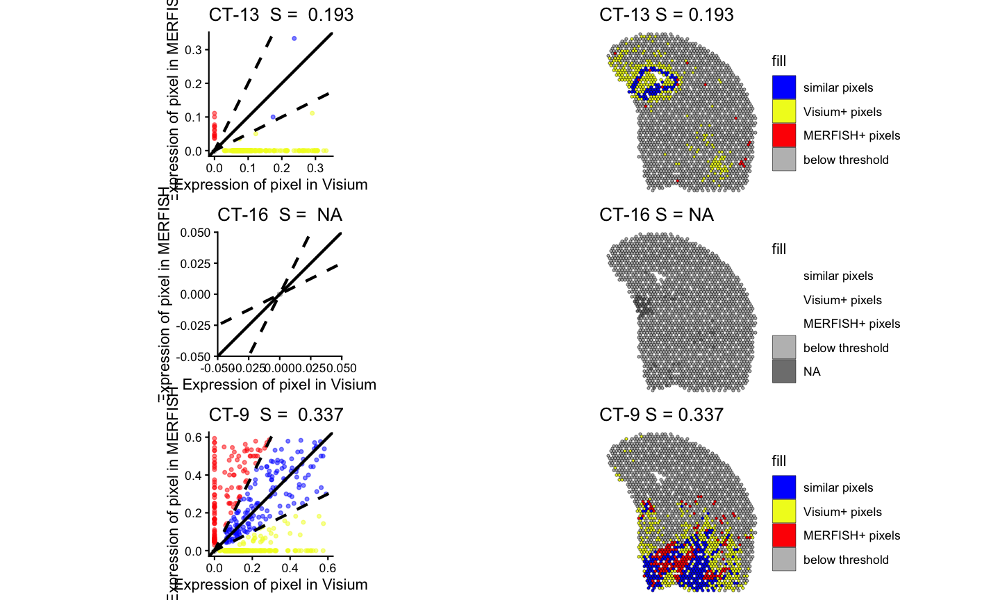
gridExtra::grid.arrange(gridExtra::arrangeGrob(grobs = pltlist[[7]], ncol = 2),
gridExtra::arrangeGrob(grobs = pltlist[[8]], ncol = 2),
gridExtra::arrangeGrob(grobs = pltlist[[9]], ncol = 2)
)
#> Warning: Removed 133 rows containing missing values or values outside the scale range
#> (`geom_point()`).
#> Warning: Removed 180 rows containing missing values or values outside the scale range
#> (`geom_point()`).
#> Warning: Removed 181 rows containing missing values or values outside the scale range
#> (`geom_point()`).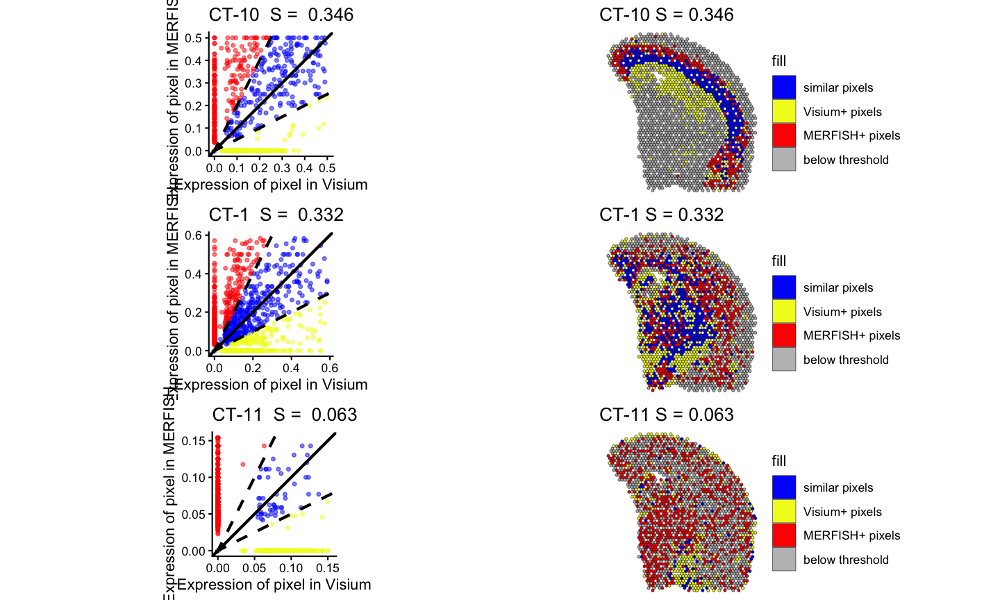